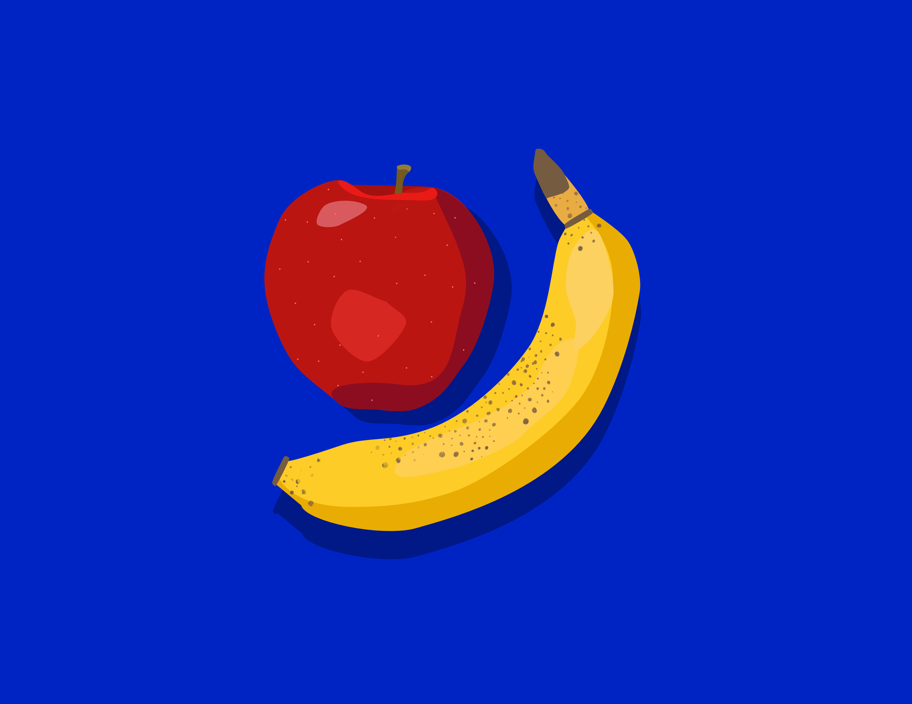
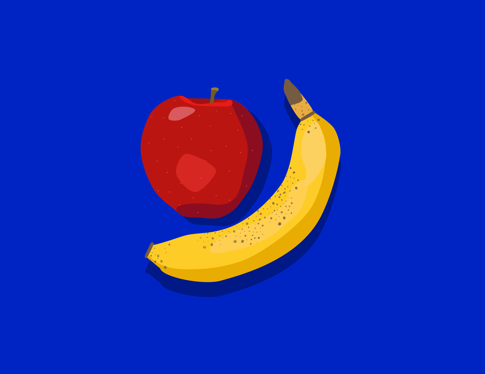
 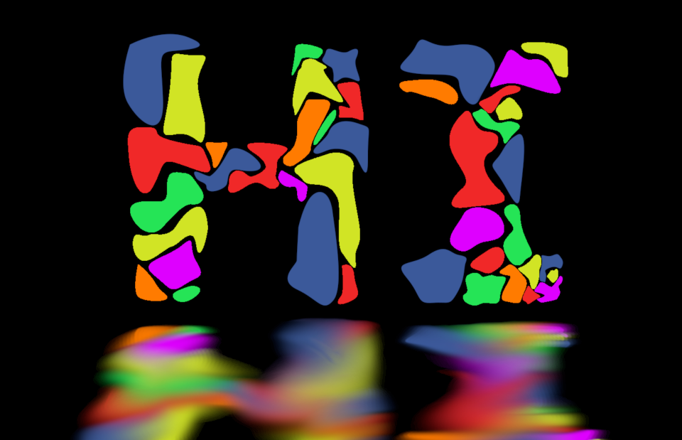
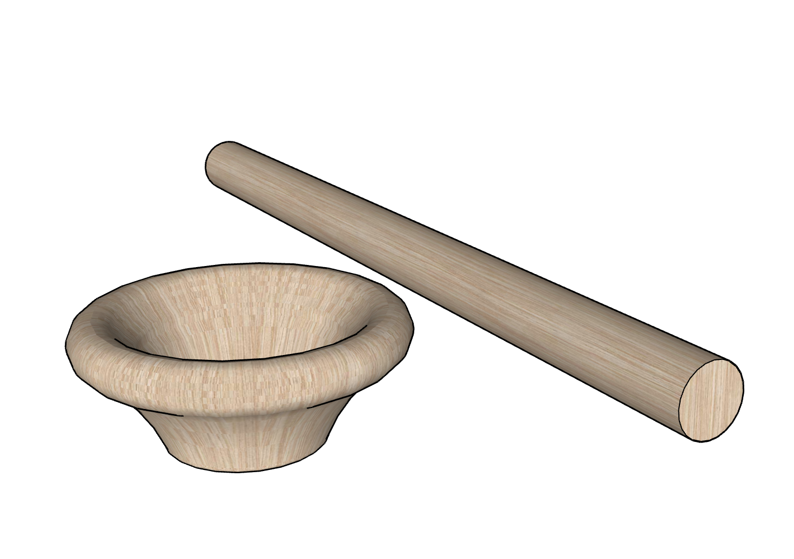
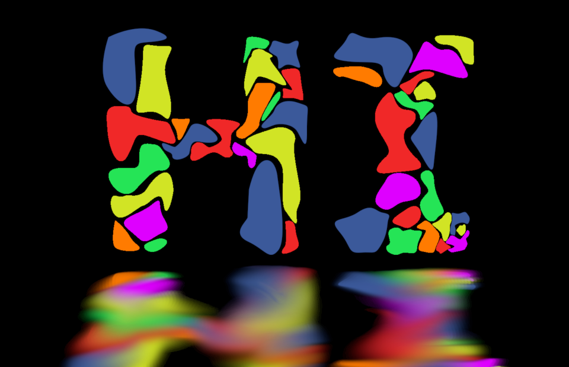
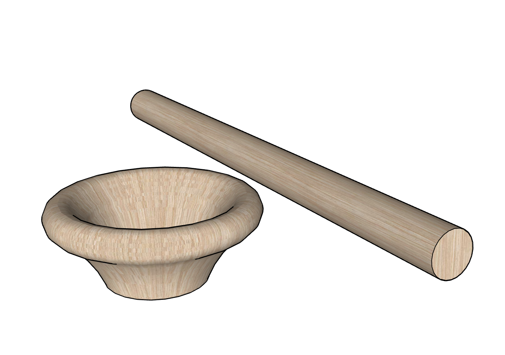
 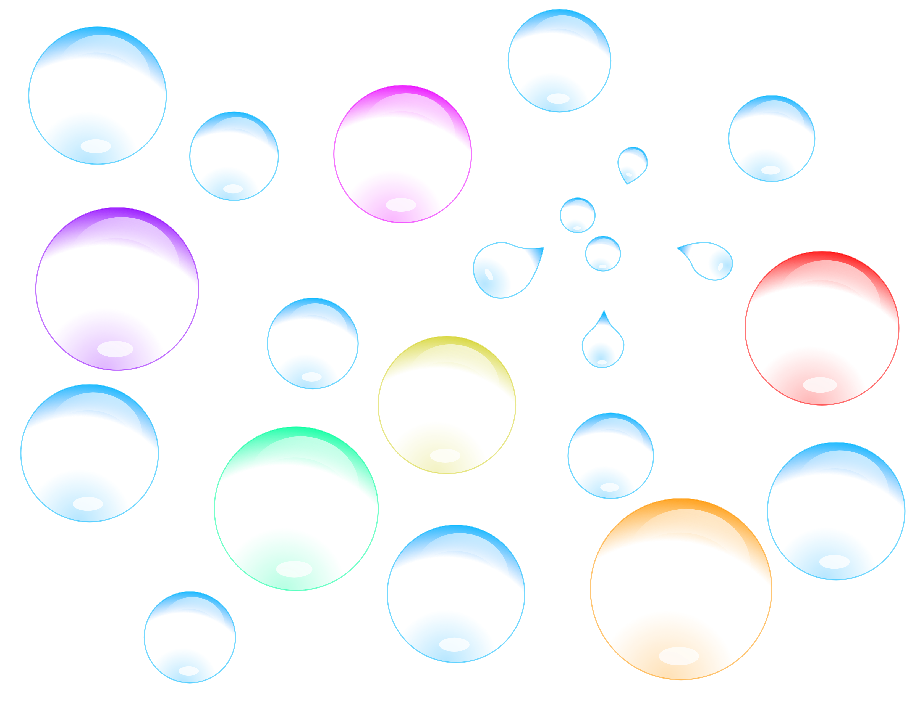
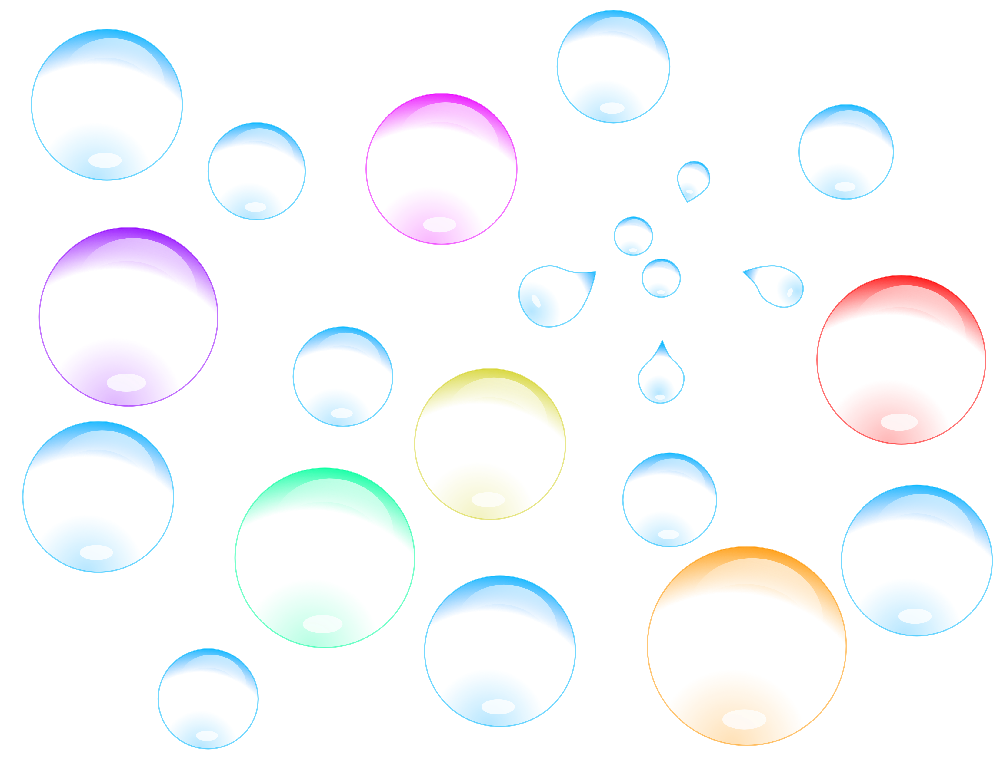
I like to draw vector images using Affinity Designer. Additionally, I enjoy editing photos. I also occasionally sketch things during class, when I'm bored. Finally, I also know how to use CAD. Below, you will encounter some of the work I have done in art classes and for fun (Warning: These Pieces Contain Minimal Effort). You can also find more of my work by exploring this website!
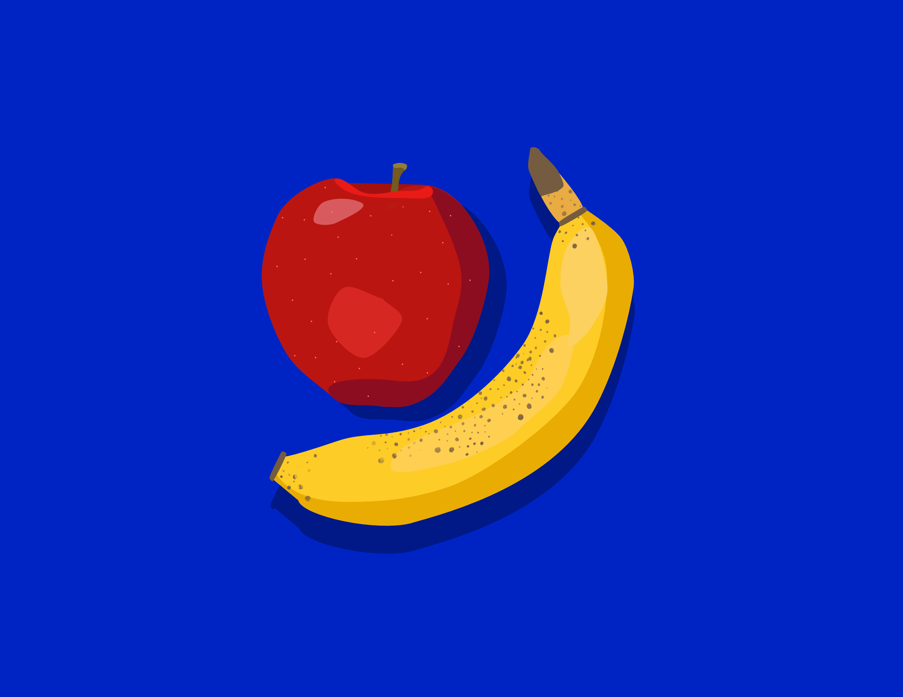
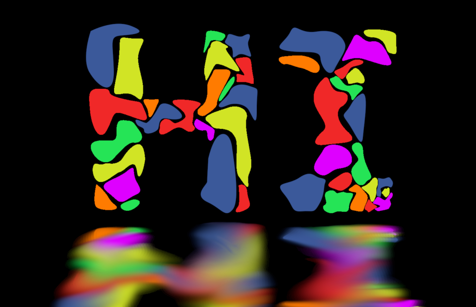
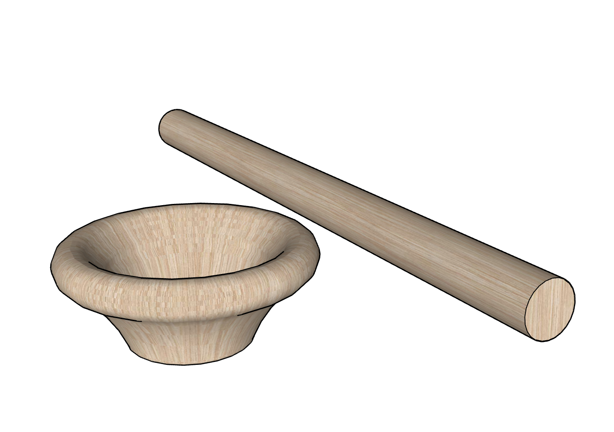
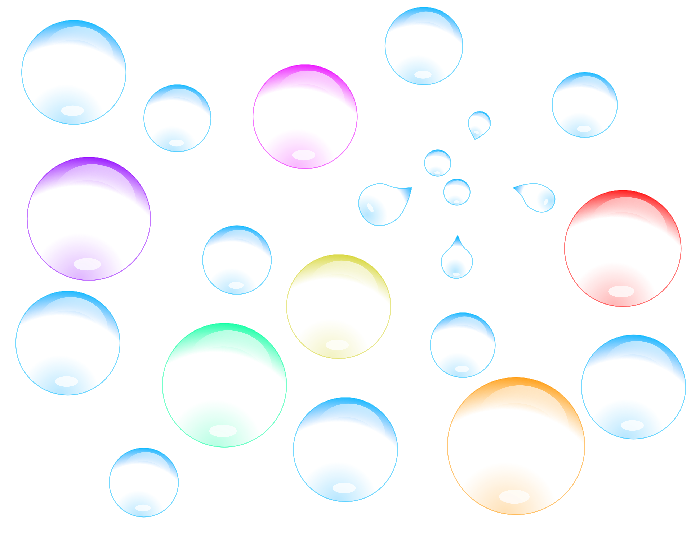